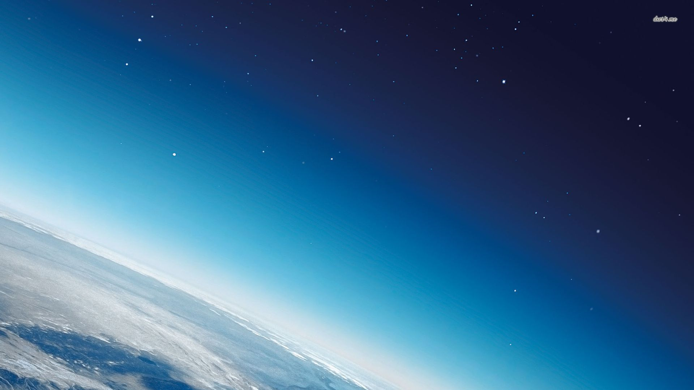

Forrige side

Velkommen til del 1E! Her skal vi bruke litt termodynamikk igjen, nå kombinert med gravitasjonskrefter. Både i planetatmosfærer og inne i en stjerne så har vi gass som blir trukket på av tyngdekraften. Men for stabile stjerner og stabile atmosfærer så er det noe som trykker tilbake og gjør at at disse ikke kollapser. Vi skal her utlede en kraftfull likning som gjør av vi kan lære mye om et slikt system (som atmosfærer eller en stjernes oppbygging) utifra det enkle faktum at det er stabilt.
Er du klar?
Neste side